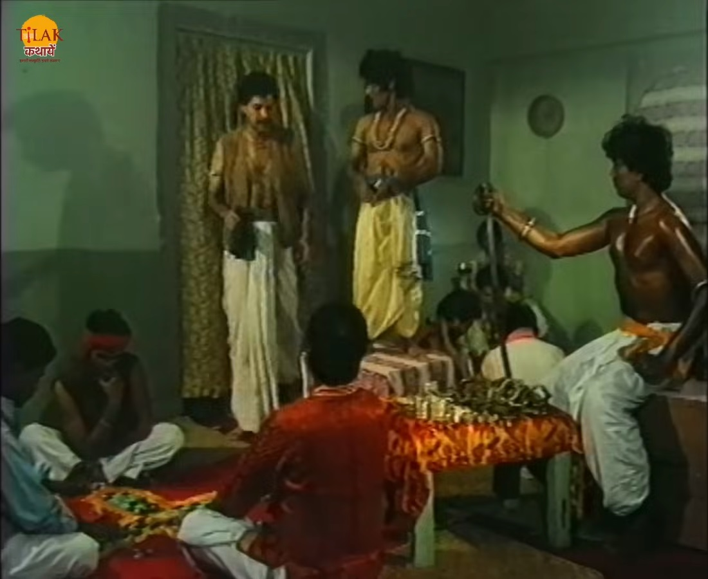
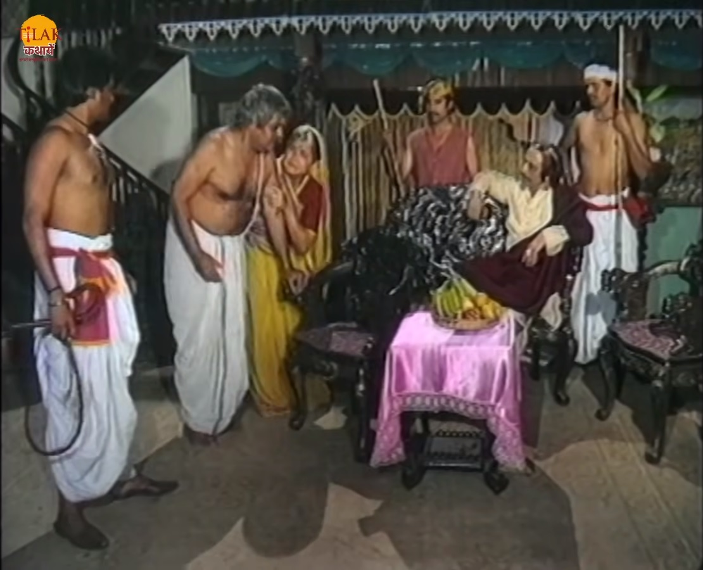
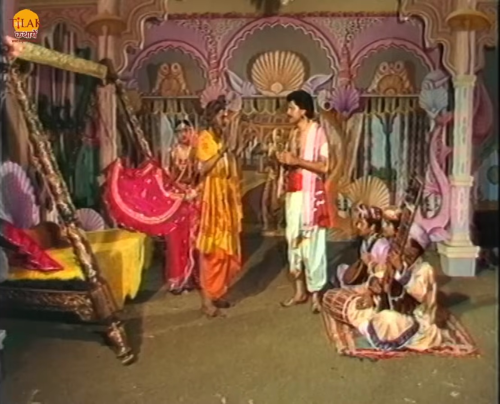
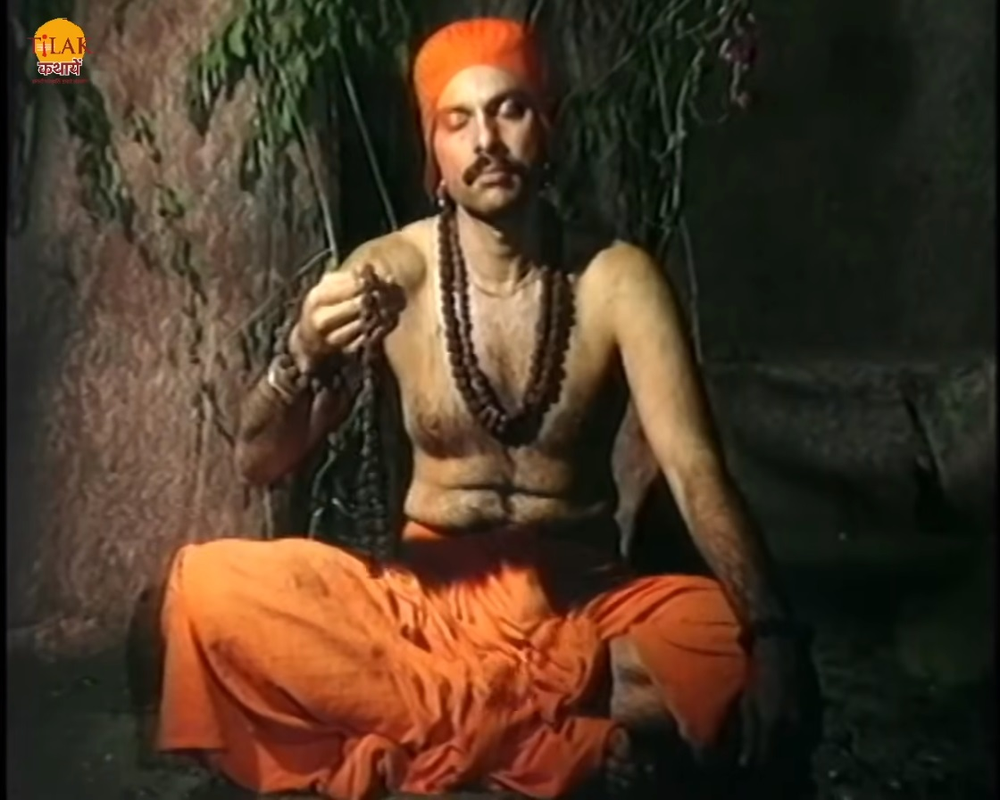

|  | विक्रम बेताल को फिर से पकड़ कर ले चलता है और बेताल फिर से उसे एक काहनी सुनता है जिसमें उज्जैन नगरी में एक ब्राह्मण रहता था। ब्राह्मण का एक गुणकर नाम का एक बेटा था। गुणकर को एक बुरी आदत थी वह अपने घर के पासी चुराता था और जुआ खेलता था। गुणकर पैसे चुराता और जुए में उड़ा देता। ब्राह्मण ने साहूकार से उद्धार लिया हुआ था साहूकार के आदमी घर में आते हैं और जब ब्राह्मण उनको पैसे देने के लिए पैसे देखता है तो उसे पैसे नहीं मिलते वो समझ जाता है की गुणकर ने पैसे चुरा लिए हैं। साहूकार के आदमी ब्राह्मण को मरते हुए साहूकार के पास ले जाते हैं। साहूकार ब्राह्मण को बंदी बना लेता है और उनके परिवार से कहता है की रक़म चुका कर इसे ले जाए तो ब्राह्मण की पत्नी अपने सारे ज़ेवर देकर ब्राह्मण को मुक्त कर लेती है। गुणकर सारे पैसे हार जाता है जब वह वापस आता है तो उसका पिता उसे घर से निकाल देता है। गुणकर उस नगर को छोड़कर चला जाता है। गुणकर डार बदर की ठोकर खाता फिर रहा था उसे कोई भी भोजन नहीं देता है। भूख से गुणकर का बुरा हाल हो जाता है। गुणकर को एक साधु बुरी हालत में देखते हैं तो उसे अपने साथ ले जाते हैं। गुणकर उनसे खाने के लिए भोजन माँगता है तो साधु गुणकर को एक दिव्य पत्ता खिलाते हैं जिसे खाकर उसकी भूख मिट जाती है। |  |
साधु गुणकर को गुफा में विश्राम करने के लिए भेजता है। साधु बाबा अपनी शक्ति से गुणकर को सुख सुविधा देते हैं ताकि वो चैन से सो सके। गुणकर जसी ही गुफा मीन जाता है तो उसे अंदर महल दिखता है। गुणकर यह देख वापस से साधु के पास जाता है और उनसे इस सब के बारे में पूछता है तो साधु उसे कहते हैं की यह सब मेरी सिद्धि है। गुणकर उनसे कहता है की वो अब उनके पास ही रहेगा ताकि वो रोज़ अच्छा भोजन कर सके और सुख का जीवन जी सके तो साधु उसे मना कर देता है की वो इस सिद्धि को ऐसे व्यर्थ नहीं कर सकते लेकिन में तुम्हें 8 दिन के लिए अपने इस महल में अतिथि बनकर रख सकता हूँ। गुणकर साधु की बात मान कर वहीं रुक जाता है। गुणकर अपने 8 दिन का सुख पूरा कर लेता है तो साधु बाबा वहाँ आकर उसे जाने के लिए कहते हैं तो गुणकर उनसे कहता है की वो ये सुख पाने के लिए कुछ भी करेगा आप उसे यह सिद्धि पाने का रास्ता बताएँ। साधु गुणकर की ज़िद्द को देख कर उसे सिद्धि पाने का रास्ता बता देते हैं। गुणकर सिद्धि पाने के लिए तप शुरू कर देता है। गुणकर साधना का पहला चरण पूर्ण करने के बाद वह साधु से मिलता है तो साधु उसे कहते हैं की वो अब दूसरा चरण शुरू करने को तैयार हो जाए। दूसरा चरण शुरू होने से पहले गुणकर साधु से कहता है की वो पहले एक बार अपने घर जाना चाहता है फिर आके साधना को शुरू करेगा। गुणकर अपने घर वालों के लिए साधु से वस्त्र और पासी माँगता है साधु उसे सब दे देते हैं।
|  | गुणकर सारा सामान लेकर चल पड़ता है। गुणकर अपने घर आता है और अपने घर वालों को वो सब कुछ दे कर सारी बात बताता है। कुछ दिन बाद गुणकर वापस से साधु बाबा के पास आ जाता है और साधना कि दूसरा चरण शुरू कर देता है। दूसरा चरण पूरा होने पर साधु बाबा के पास गुणकर आता है और साधु से आकर कहता है की वो अब अपनी सिद्धि पूरी कर चुका है अब वो सब कुछ पा सकता है। साधु बाबा गुणकर की बात सुनकर उसे अपने लिए भोजन लाने को कहते हैं तो गुणकर अपनी सिद्धि का इस्तेमाल करने की कोशिश करता है लेकिन भोजन प्रकट नहीं होता यह देख कर गुणकर साधु बाबा से पूछता है की उसे सिद्धि प्राप्त क्यों नहीं हुई। इतनी कहानी सुनकर बेताल विक्रम से पूछता है की बता की गुणकर को सिद्धि क्यों प्राप्त नहीं हुई। उसने सारा साधना को पूर्ण किया फिर भी उसे सिद्धि नहीं मिली। विक्रम बेताल को बताता है की किसी भी साधना या तप तक पूर्ण नहीं होता जब तक आप उसे एकाकार होकर नहीं करते गुणकर साधना के बीच में ही अपने घर चला गया था इसलिए उससे सिद्धि प्राप्त नहीं हुई। राजा विक्रम का उत्तर सुनकर बेताल उसे कहता है की तुम्हें अच्छा निर्णय किया है लेकिन मेरी शर्त के अनुसार तुम्हें बोलना नहीं था और तुम फिर से बोल पड़े इसलिए में जा रहा हूँ। बेताल फिर से अपने पेड़ पर जाकर लटक जाता है। |  |
| Previous Story | Home | Next Story |